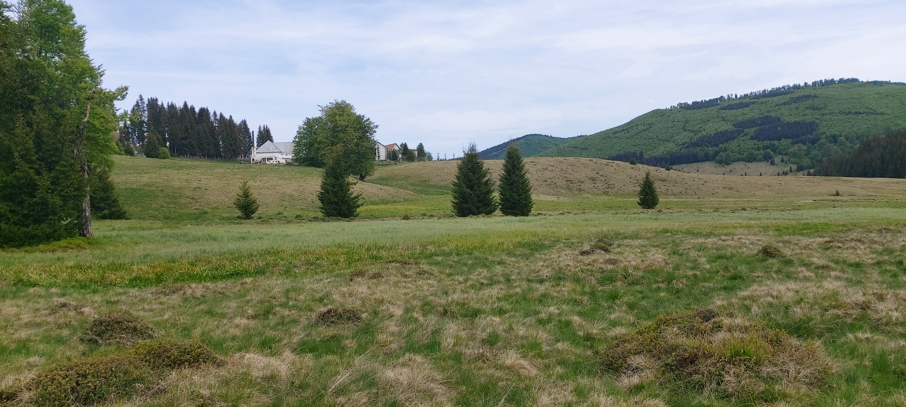

În inima Munților Gutâi Igniș, într-un cadru natural încântător al județului Maramureș, specific satului Mara din comuna Desești, descoperim Mlaștinile Vlășchinescu sau Vlășinescu, o bijuterie ecologică de 2,92 hectare. Acest ecosistem fascinant, îmbogățit de o diversitate biologică remarcabilă, rivalizează cu alte atracții turistice de renume din regiune.
Din cauza presiunilor antropice locale și schimbărilor climatice, Mlaștina Vlășchinescu se confruntă cu o situație precară în ceea ce privește conservarea sa. În efortul de a proteja această zonă, situl a fost desemnat Arie Naturală Protejată începând cu anul 2000, fiind recunoscut ca Monument al Naturii în categoria III de către IUCN.

Aspectul de tinov bombat al Mlaștinilor Vlășchinescu
Mlaștina adăpostește diverse specii de mușchi din genul Sphagnum, principalul contributor la formarea turbăriilor, precum și o floră distinctivă care creează un covor colorat în timpul sezonului cald, captivant atât din perspectiva științifică, cât și peisagistică.
Printre speciile de plante prezente se numără:

Drosera rotundifolia – specie protejată, caracteristică tinoavelor, faimoasă prin faptul că este carnivoră

Vaccinium oxycoccos (răchițele)

Carex pauciflora

Empetrum nigrum (vuitoare)

Fauna de nevertebrate din tinov

Familia Gryllidae – greier în tinov

Arahnid și pânza sa în tinov
Recomandăm turiștilor să se bucure de vizita în Maramureș, dar cu grijă pentru natură și o mai mare protecție pentru aceste ecosisteme, deoarece speciile caracteristice tinoavelor sunt foarte sensibile la presiunile antropice.
Astfel, păstrați cât mai multe amintiri prin fotografii și nu prin colectarea de plante sau animale. Unele dintre ele sunt protejate datorită declinului populațional al acestora. Și pentru ca și alți vizitatori să se bucure de minunatele peisaje, recomandăm să nu aruncați gunoaie sau să distrugeți vegetația.
O regulă foarte importantă pentru turbării, nu faceți focul în aceste habitate, deoarece turba arde mocnit și incendiul poate străbate subteran zeci de metri, izbucnind la distanță.